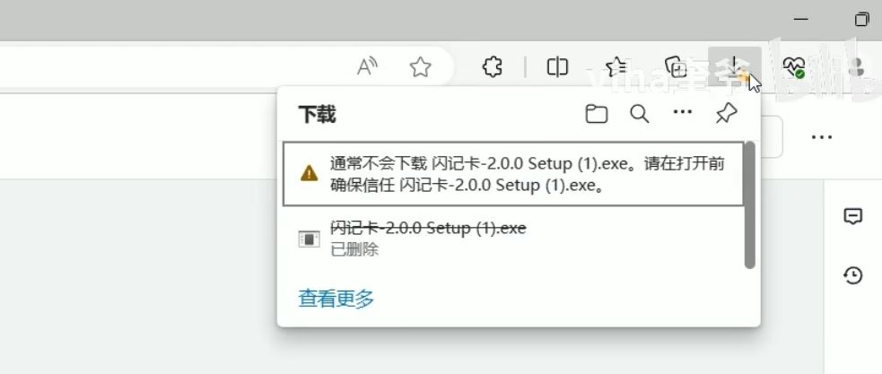
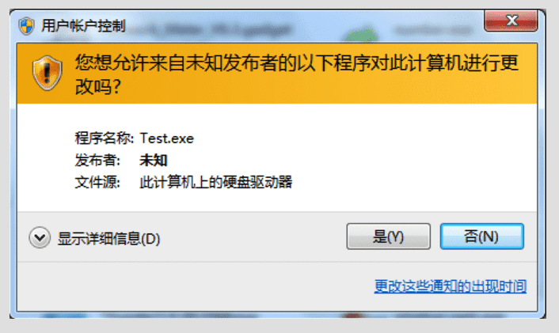
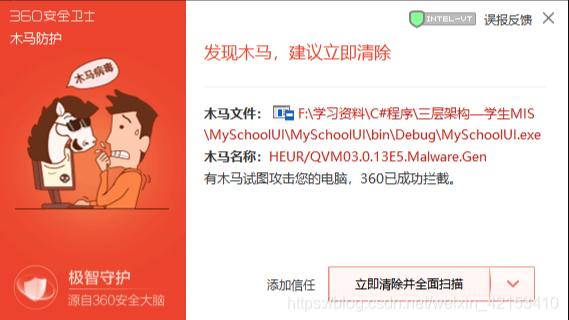
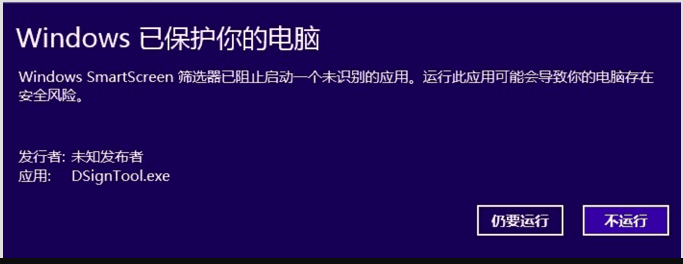
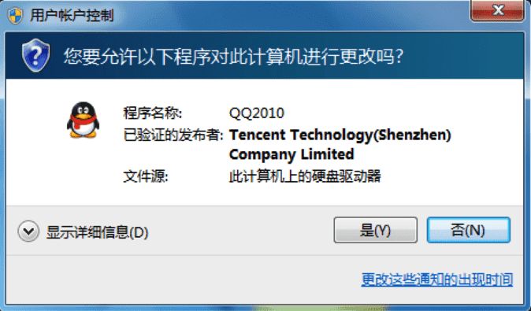

我们在开发完 windows 软件打包为 .exe 进行分发时，会遇到三个坑
1、用户通过浏览器下载 exe 安装包时会被拦截

2、点击 exe 文件安装时会被警告提醒或被杀毒软件误报为病毒


3、安装后点击运行电脑会报风险应用

使用代码签名证书（Code Signing Certificate）对 .exe 安装包进行签名，就是为了解决以上几个关键问题，提高软件的可信度、安全性和用户体验：
签名后的 .exe 文件如果被篡改（如恶意注入木马、病毒），签名就会失效，操作系统和安全软件会提示用户该文件可能不安全。
作用：确保下载和执行的安装包与开发者发布的一致，未被第三方修改。
签名证书中包含了开发者或公司的合法身份信息（比如公司名称），安装时系统会显示：
发布者：XXX公司而不是：
发布者：未知
作用：建立信任，减少用户在看到“未知发布者”时取消安装的情况。
未签名的 .exe 在 Windows 上运行时，特别是在 Windows 10/11 中，用户会看到如下警告：
Windows 保护你的电脑
SmartScreen 阻止了一个未识别的应用启动……而签名文件可以显著减少这种阻拦提示，尤其是在配合EV代码签名证书时，可以直接绕过 SmartScreen 的拦截。
杀毒软件和防火墙会优先信任签名文件。未签名的程序更容易被拦截、隔离或误报为病毒。
签名安装包表明你是一个有信誉的开发者或公司，用户在安装时更容易信任你的软件，有助于提升转化率和品牌形象。
一些平台（如 Microsoft、某些企业级分发平台）要求 .exe 必须签名才能被接受或正常安装。
| 问题/需求 | 是否可通过代码签名解决 |
|---|---|
| 防止文件被篡改 | ✅ 是 |
| 显示合法发布者身份 | ✅ 是 |
| 减少 Windows SmartScreen 拦截 | ✅ 是（尤其是 EV 签名） |
| 减少杀毒软件误报 | ✅ 是 |
| 增强用户信任 | ✅ 是 |
| 满足某些平台发布要求 | ✅ 是 |
建议申请 EV 证书，普通代码签名证书对 SmartScreen 的效果有限，新安装包可能仍提示不安全，需要累积信誉后才能被认为是安全的安装包。
若希望直接绕过 SmartScreen 拦截，建议使用EV 代码签名证书（Extended Validation Code Signing Certificate）。
签名申请平台：
购买 EV 代码签名证书后，给 .exe 安装包进行签名的流程大致如下。
| 项目 | 说明 |
|---|---|
| EV 代码签名证书 | 已购买的 EV 证书（如 Certum EV） |
| USB 令牌（Token） | EV 证书强制使用硬件加密设备（证书私钥存于 USB 令牌中） |
| Microsoft SignTool 工具 | Windows SDK 自带，也可单独下载 |
已编译的 .exe 文件 |
你要签名的安装包或应用程序可执行文件 |
| 时间戳服务器地址 | 用于防止签名因时间过期失效（Certum 常用时间戳地址见下） |
SignTool 是微软官方签名工具，免费、安全：
signtool.exe 位于路径：C:\Program Files (x86)\Windows Kits\10\bin\<version>\x64\证书管理器 > 个人 > 证书（可使用 certmgr.msc 打开）这是标准签名命令（含时间戳）：
signtool sign /tr http://timestamp.certum.pl /td sha256 /fd sha256 /n "你的公司名称" "your_app.exe"参数说明：
/n "你的公司名称"：签名证书中的发布者名称（如：ABC Technology Co., Ltd.）/fd sha256：使用 SHA256 算法（现在已强制要求）/td sha256：时间戳摘要算法（推荐 SHA256）/tr http://timestamp.certum.pl：Certum 时间戳服务器（也可以用其他如 DigiCert 的：）your_app.exe：你的可执行文件路径示例：
signtool sign /tr http://timestamp.certum.pl /td sha256 /fd sha256 /n "MySoftware Co., Ltd." myinstaller.exe运行以下命令来检查签名状态：
signtool verify /pa /v myinstaller.exe或者右键 .exe → “属性” → “数字签名” 标签页 查看。
| 项目 | 注意点 |
|---|---|
| ⚠️ Windows SmartScreen | 仅 EV 证书才能立即信任，普通证书需要信誉积累 |
| 🔐 私钥安全 | EV 证书私钥不可导出，只能通过 USB Token 使用 |
| 🔄 多次签名 | 若你对文件做了修改或重打包，需要重新签名 |
| 🕓 时间戳服务器 | 一定要加 /tr 和 /td 否则签名会因过期而无效 |
将以下内容复制到一个 .bat 文件中，例如保存为 sign_myinstall.bat：
@echo off
setlocal
:: 设置 SignTool 路径（请根据你安装的 SDK 版本修改）
set SIGNTOOL="C:\Program Files (x86)\Windows Kits\10\bin\x64\signtool.exe"
:: 要签名的文件
set TARGET_FILE=myinstall.exe
:: 发布者名称（填写你 EV 证书中的公司名称）
set PUBLISHER="你的公司名称或个人名称"
:: Certum 时间戳服务器
set TIMESTAMP=http://timestamp.certum.pl
echo 正在为 %TARGET_FILE% 进行数字签名...
%SIGNTOOL% sign /n %PUBLISHER% /tr %TIMESTAMP% /td sha256 /fd sha256 %TARGET_FILE%
if %errorlevel% neq 0 (
echo 签名失败！请检查证书是否正确安装和 USB Token 是否插入。
) else (
echo 签名成功！
)
pause
endlocalmyinstall.exe 和这个 .bat 文件放在同一个目录下；SIGNTOOL 路径（如需修改 SDK 版本）；PUBLISHER 为你的 EV 证书中的真实公司名称；.bat 文件即可签名；[1] 安信证书: https://www.anxinssl.com/code-signing-certificate/[2] 环度网信: https://www.ihuandu.com/codesigning.html[3] TrustAsia: https://www.trustasia.com/ssl/trustasia/code-signing[4] Windows 10 SDK: https://developer.microsoft.com/en-us/windows/downloads/sdk-archive/[5] DigiCert 的：: http://timestamp.digicert.com